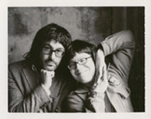
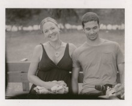
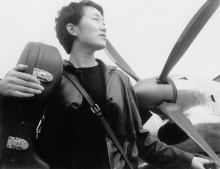
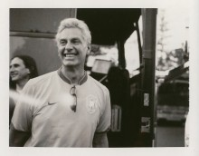
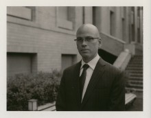

In 1994 in his hometown of Portland, Oregon, Thomas Lauderdale was working in politics, with the intention of eventually running for office. Like other eager politicians-in-training, he went to every political fundraiser under the sun… but was dismayed to find the music at these events underwhelming, lackluster, loud and un-neighborly. Drawing inspiration from music from all over the world – crossing genres of classical, jazz and old-fashioned pop – and hoping to appeal to conservatives and liberals alike, he founded the “little orchestra” Pink Martini in 1994 provide more beautiful and inclusive musical soundtracks for political fundraisers for causes such as civil rights, affordable housing, cleaning up the Willamette River, funding for libraries, public broadcasting, education and parks.
THOMAS M. LAUDERDALE. Piano One year later, Lauderdale called China Forbes, a Harvard classmate who was living in New York City, and asked her to join Pink Martini. They began to write songs together. Their first song – “Sympathique” (Je ne veus pas travailler)- became an overnight sensation in France, was nominated for “Song of the Year” at France’s Victoires de la Musique Awards, and to this day remains a mantra (“Je ne veux pas travailler” or “I don’t want to work”) for striking French workers. Says Lauderdale, “We’re very much an American band, but we spend a lot of time abroad and therefore have the incredible diplomatic opportunity to represent a broader, more inclusive America… the America which remains the most heterogeneously populated country in the world… composed of people of every country, every language, every religion. Except for Native Americans, all of us are immigrants from every country, of every language, of every religion.”
STORM LARGE. Vocals Featuring a dozen musicians, Pink Martini performs its multilingual repertoire in over 25 languages on concert stages and with symphony orchestras throughout Europe, Asia, Greece, Turkey, the Middle East, Northern Africa, Australia, New Zealand, South America and North America. Pink Martini made its European debut at the Cannes Film Festival in 1997 and its orchestral debut with the Oregon Symphony in 1998 under the direction of Norman Leyden. Since then, the band has gone on to play with more than 70 orchestras around the world, including multiple engagements with the Los Angeles Philharmonic at the Hollywood Bowl, the Boston Pops, the National Symphony at the Kennedy Center, the San Francisco Symphony, the Cleveland Orchestra, the Sydney Symphony at the Sydney Opera House, and the BBC Concert Orchestra at Royal Albert Hall in London.
PANSY CHANG. Cello Other appearances include the grand opening of the Los Angeles Philharmonic’s Frank Gehry-designed Walt Disney Concert Hall, with return sold-out engagements for New Year’s Eve 2003, 2004, 2008, 2011, 2014 and 2016; sold-out concerts at Carnegie Hall; the opening party of the remodeled Museum of Modern Art in New York City; the Governor’s Ball at the 80th Annual Academy Awards in 2008; there sold out shows with the Sydney Symphony at the renowned Sydney Opera House; sold-out concerts at Royal Albert Hall in London in 2011, 2013 and 2016, multiple sold-out appearances, and a festival opening, at the Montreal Jazz Festival, two sold-out concerts at Paris’ legendary L’Olympia Theatre in 2011 and 2016; and Paris’ fashion house Lanvin’s 10-year anniversary celebration for designer Alber Elbaz in 2012. In 2014, Pink Martini was inducted into both the Hollywood Bowl Hall of Fame and the Oregon Music Hall of Fame.
BRIAN LAVERN DAVIS. Congas, Drums & Percussion Television appearances include The Late Show with David Letterman, Late Night with Conan O’Brien, The Tonight Show with Jay Leno, Later with Jools Holland, and a feature on CBS Sunday Morning. The band created a nationally broadcast 2015 NPR holiday concert special, Joy to the World: A Holiday Spectacular, and has been featured on multiple New Year’s Eve broadcasts on NPR’s Toast of the Nation.
TIMOTHY NISHIMOTO. Vocals & Percussion 